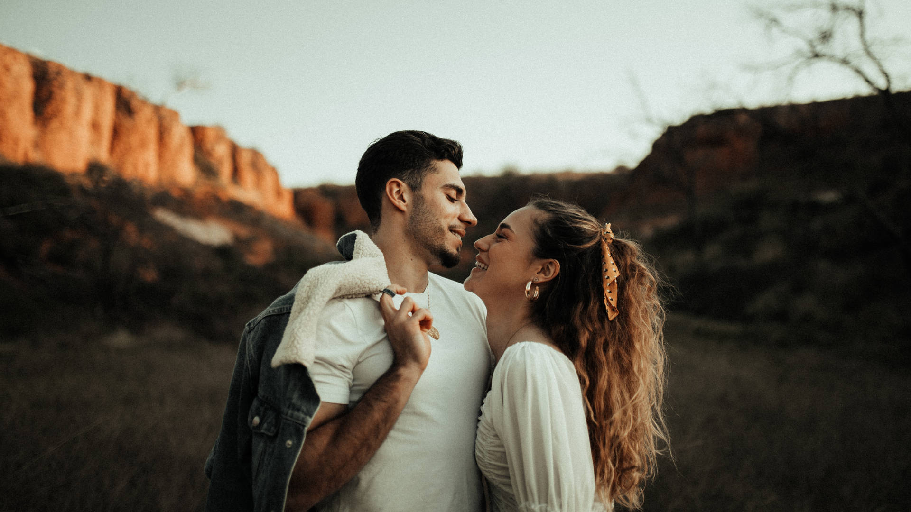

Todo empezó con una charla de esas que se dan cuando el mundo se queda quieto… después de acostar al gordito, con un té en la mano y muchas ganas en el corazón.No fue un plan perfecto ni estratégico. Fue una necesidad. La necesidad de crear algo nuestro. De sentirnos más libres, más cerca, más auténticos. Teníamos un hijo chiquito y eso, lejos de frenarnos, nos dio más fuerza. Porque cuando alguien te mira con esos ojitos llenos de futuro, entendés que vale la pena intentar. Queríamos mostrarle que sí se puede elegir otro camino. Que trabajar también puede ser sinónimo de pasión y amor.
Así nació nuestro emprendimiento. Entre pañales, siestas aprovechadas y muchas charlas nocturnas. Uno ponía la chispa creativa, el otro la organización (¡y a veces al revés!). Nos turnábamos en todo: cocinar, diseñar, contestar mensajes y hacer dormir al enano. Claro que hubo cansancio, dudas, días en los que parecía imposible. Pero también hubo magia:la primera venta, el primer "gracias" de un cliente y el primer “eso lo hacen mis papás”, dicho con orgullo.
Hoy miramos atrás y nos emociona todo lo que creamos. No solo un negocio, sino un estilo de vida. Una forma de trabajar, de amar y de criar, juntos. Como pareja. Como familia. Y eso, para nosotros, lo es TODO.
